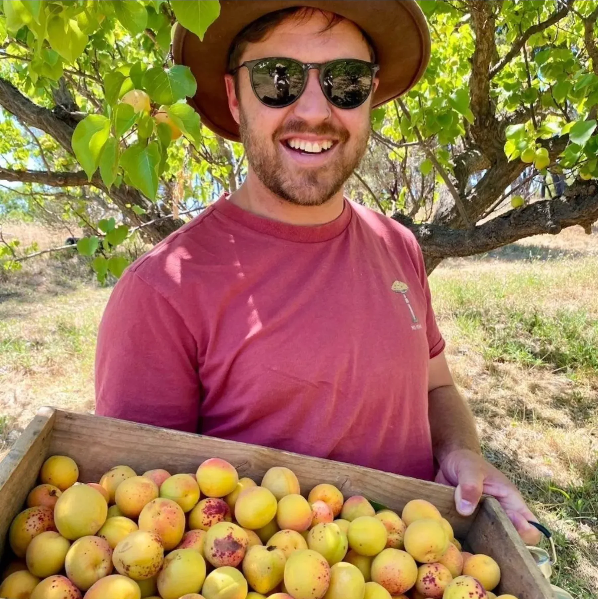

Nathan Strawbridge
Nathan Strawbridge is a nutritional agronomist working with vineyards and tree crops across South Australia and western Victoria. His work covers soil and plant health, with testing and observations used to guide nutrition decisions.

Vineyards and tree crops across the region.
Nathan works across McLaren Vale, the Adelaide Hills, the Barossa, the Riverland and the South East, as well as western Victoria. His experience includes vineyard and tree-crop nutrition and regenerative farming systems.
Nathan works with growers through the season, reviewing crop observations alongside soil and plant test results.
Vineyards, tree crops and growing regions.
Nutrition advice for vineyards and tree crops across South Australia and Western Victoria, informed by soil, leaf and sap results.

Growing food outside work.
Nathan’s interest in growing food continues outside his agronomy work. With Raven and Hugo, he helps care for Bald Hills Olive Grove at Nairne in the Adelaide Hills. Their work there includes regenerative agriculture and local extra-virgin olive oil production.
The grove was planted in 1998 and grows several Mediterranean olive varieties. For its olive oil, ripe fruit is harvested and cold-pressed straight away. Away from the grove, Nathan enjoys spending time outdoors with family and friends.
Nathan Strawbridge · Adelaide Hills, SA
Useful places to start.

Choosing the right test
Understand what each test measures and when it may be useful.
Read
Position. Pattern. Plan.
Use current and previous results to discuss what to do next.
Read
Make every sample a useful reference.
Keep the original report and sample details together as a useful reference for future crop nutrition decisions.
ReadDiscuss your vineyard or tree-crop nutrition with Nathan.
Send your test results or get in touch with a question about your block.